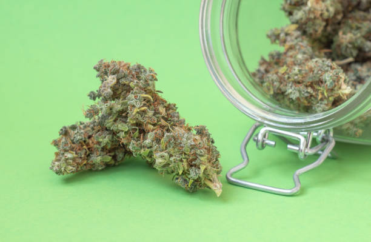

How to Reach a Wider Audience and Increase Sales Through Social Media Marketing
Posted by on 2024-06-10
In today's digital age, social media has become a powerful tool for businesses to reach a wider audience and increase sales. With billions of active users on platforms like Facebook, Instagram, Twitter, and LinkedIn, the potential for growth through social media marketing is immense.
So, how can businesses effectively utilize social media to expand their reach and boost sales? The key lies in creating engaging content that resonates with your target audience. By posting relevant and valuable information, you can attract more followers and keep them engaged with your brand.
Another important aspect of social media marketing is consistency. It's essential to maintain a regular posting schedule to keep your audience interested and informed about your products or services. By staying active on social media platforms, you can build trust with your followers and establish your brand as an authority in your industry.
Furthermore, utilizing paid advertising on social media can help you reach a larger audience and drive more traffic to your website or online store. Platforms like Facebook Ads and Instagram Ads allow you to target specific demographics based on interests, location, and behavior, ensuring that your message reaches the right people.
In addition to creating compelling content and utilizing paid advertising, engaging with your followers is crucial for building relationships and increasing sales. Responding to comments, messages, and reviews shows that you value customer feedback and are committed to providing excellent service.
Overall, by leveraging the power of social media marketing, businesses can effectively reach a wider audience and increase sales. With strategic planning, consistent posting, paid advertising campaigns, and engagement with followers, businesses can grow their online presence and achieve success in today's competitive marketplace.